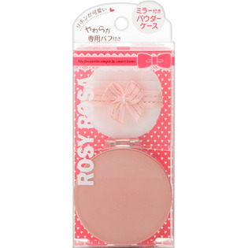

返回列表
产品名称：ロージーローザ ミラー付きパウダーケース

シャンテイ ロージーローザ ミラー付きパウダーケース ＿
メーカー シャンテイ
JANコード 4901604453000
商品の特徴
リボンが可愛い やわらか専用パフ付き
- 成分・分量
- マイカ、タルク、酸化チタン、(HDI/PPG/ポリカプロラクトン)クロスポリマー、シリカ、メトキシケイヒ酸エチルヘキシル、セバシン酸イステアリル、窒化ホウ素、リンゴ酸ジイソステアリル、ジメチコン、ミネラルオイル、セージエキス、ノイバラ果実エキス、ノバラ油、ヒアルロン酸Na、ローズマリーエキス、(ジメチコン/メチコン)コポリマー、BG、酸化亜鉛、水、水酸化Al、硫酸Na、ジカプリン酸ネオペンチルグリコール、ステアリン酸、ステアロイルグルタミン酸2Na、セスキオレイン酸ソルビタン、ヒドロキシアパタイト、ブドウ
- 用法及び用量
- ＜使用方法＞
1．中フタを取り外し、パウダーをケースの約3分の1の高さまでの適量を入れます。
2．中フタをしっかりと閉め、必ず専用のパフを入れ、フタをカチッというまで閉じてご使用ください。